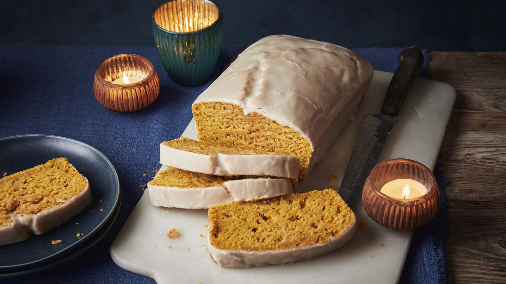

Vegan Pumpkin Loaf Cake

Ingredients
For the cake
- 220ml/8fl oz unsweetened almond milk
- 1 tbsp apple cider vinegar or distilled white vinegar
- 125ml/4fl oz neutral oil, plus extra for greasing
- 1 tbsp maple syrup
- 1 tsp vanilla extract
- 200g/7oz pumpkin purée (see Recipe Tip)
- 350g/12oz self-raising flour
- 1 tsp baking powder
- 165g/5¾oz caster sugar
- 1¼ tsp ground mixed spice or chai spice
For the icing
- 150g/5½oz icing sugar
- 1½ tbsp maple syrup
- 1 tbsp unsweetened almond milk
Method
- To make the cake, grease and line a 25x16cm/10x6¼in loaf tin with baking paper. (This is roughly a 1.8kg/4lb loaf tin.)
- Stir together the almond milk and vinegar in a jug. Leave to stand for 10 minutes until slightly curdled. Whisk in the oil, maple syrup, vanilla extract and pumpkin purée.
- Preheat the oven to 180C/160C Fan/Gas 4.
- Sift the flour, baking powder, caster sugar, mixed spice and salt into a large bowl. Pour the milk mixture into the flour mixture and beat with a balloon whisk for 30–40 seconds, or until completely smooth. Do not overmix.
- Pour the batter into the loaf tin and knock the tin on the worktop several times to remove any air bubbles. Bake in the centre of the oven for 50–55 minutes. Do not open the oven for the first 50 minutes or the cake may deflate. To test if the cake is cooked, insert a cocktail stick into the centre. It should come out clean with just a few moist crumbs attached. If there is still wet batter on the stick, bake for a little longer.
- Remove from the oven and leave to cool in the tin for 15 minutes. Carefully remove the cake from the tin and leave to cool fully on a wire rack.
- To make the icing, mix the icing sugar, maple syrup and milk in a bowl. Pour the icing over the top of the cooled cake and leave to set for 1–2 hours at room temperature. Cut the cake into slices and serve.
Recipe tips
If you have fresh pumpkin to use up then you can make your own purée instead of buying tinned. Preheat the oven to 180C/160C Fan/Gas 4, halve the pumpkin and scrape out the seeds and stringy bits with a spoon. Place the pumpkin halves, cut side down, onto a baking tray and bake for 45 minutes, until it feels soft to the touch. When cool enough to handle, scrape out the cooked flesh and mash with a fork until smooth. Set aside to cool completely, then use the same as the tinned purée.